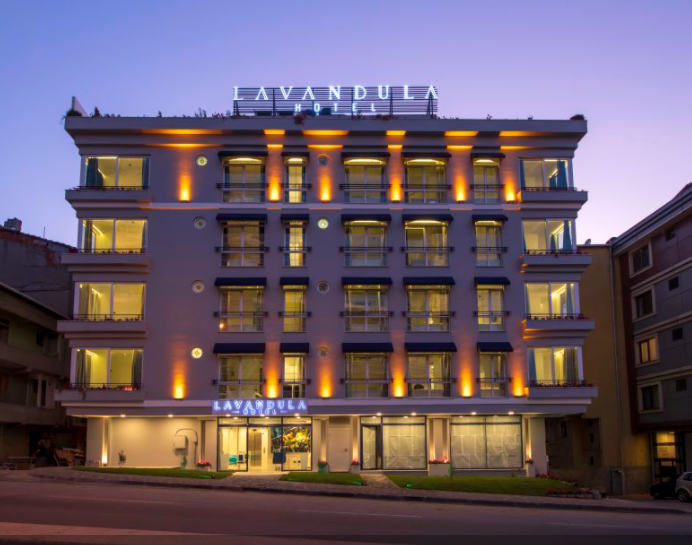

Sayfama Hosgeldiniz
Oteller
Etsturun sundugu Balayi Otellerinden Antalya Otellerine kadar farkli ozelliklere sahip yuzlerce tesisten biri sizin aradiginiz ozelliklere sahip olabilir. Tatil denildiginde ilk akla gelen cogu zaman konforlu bir otel olur. Farkli zevklere ve ilgi alanlarina gore hizmetler sunan bu oteller, hem her butceye uygun fiyatlari hem de bulunduklari bolge itibariyle oldukca degisik secenekler sunarlar.
Daha fazlasi Yorumlar (3) Nisan 15, 2021
Yurt Icinde Konaklama
Her seyin sizin icin dusunuldugu konforlu bir tatil koyu, farkli mimarisi ve ozgun tasarimiyla butik hizmet veren kucuk bir otel, sicak ve ekonomik bir tatil atmosferi sunan sirin bir pansiyon ya da stresli is seyahatlerinde merkezi konumu ve hizmeti ile rahatlik sunan bir sehir oteli. Hepsi ve daha fazlasi Etsturun Yurt Ici Otelleri sayfasinda sizi bekliyor. Oda, Oda-Kahvalti, Yarim Pansiyon, Tam Pansiyon, Her Sey Dahil ve Ultra Her Sey Dahil gibi farkli konseptlerde, luks ya da ekonomik konaklama secenekleri, Etsturda kolayca gerceklestirebileceginiz rezervasyon islemi ile sizi agirlamaya hazir.
Daha fazlasi Yorumlar (3) Nisan 15, 2021